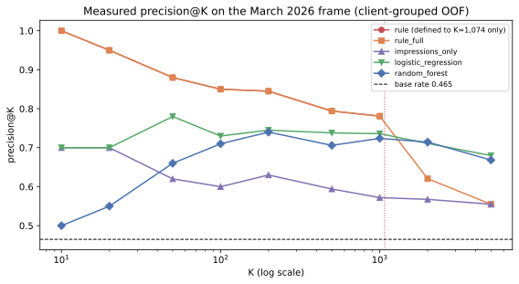
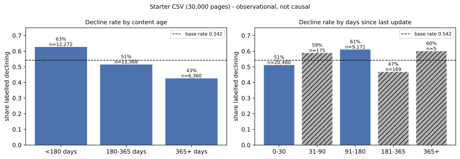
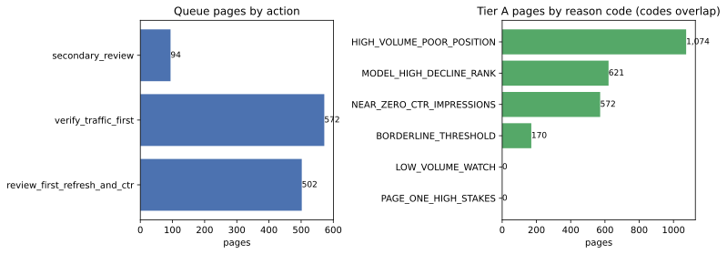
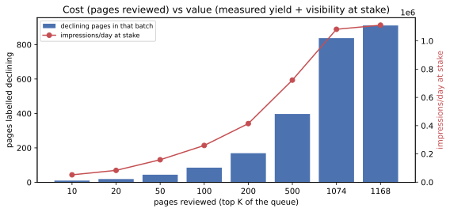

1. Abstract
A content team cannot open every page — FlyRank's content problem — and the question this paper answers is: which pages should a reviewer open first, in what order, and why? We used one month of daily search performance — March 1–31, 2026 — for 140,599 anonymized content pages across 43 pseudonymous clients, with features measured on days 1–15 and an observed label on days 16–31 (average daily impressions fell; base rate 0.465). A fixed, transparent two-threshold rule (≥ 500 impressions/day and average position ≥ 11) was benchmarked against logistic regression and a random forest on three features, all scored out-of-fold under client-grouped 5-fold validation. The rule wins the head of the queue — precision@50 of 0.880 vs 0.660 for the forest (1.89× vs 1.42× the base rate) — while the forest modestly wins the whole list (ROC-AUC 0.654 vs 0.609 for the rule as a ranker, +0.045); together they produce a tiered queue of 1,168 pages in which 78.0% actually declined. The output is decision-support for a human reviewer — ranked pages, actions, reason codes, and confidence — never an automated content change.
2. Introduction — the decision this supports
Monday morning, an SEO specialist has thirty minutes per page and an inventory of 140,599 pages. If they open the wrong fifty, the week is spent polishing pages nobody was going to find anyway.
This paper is the case study for that lane: FlyRank's Refresh / Content Opportunity Scoring track, run on the program's own production warehouse (78,835,655 rows of daily search performance), of which this March 2026 slice is the public-safe sample.
The decision this work improves is narrow and concrete: which pages to open
first, in what order, and why — the unit of analysis is one content page (a
pseudonymous content_id) in a scored month.
The obvious approach is a fixed rule: flag high-volume pages sitting deep in the results and review those. That rule was built in Week 4 of this program, before any model existed, and it is genuinely good at the top of its own list — but it is silent below its thresholds by construction, flagging 1,074 of 140,599 pages (0.76%). The remaining 139,525 pages get no rank at all, and a fixed if-statement cannot weigh several moderate signals together across them.
That is the only place machine learning earns its seat here: ranking the pages the rule cannot see. Everything this paper claims is scoped to one frame, one month, one portfolio — observed, measured, or directional; decision-support, never causal. Nothing here predicts or explains how any search engine ranks pages, and no content change is ever shipped from a score.
3. Data
Source. The FlyRank internship warehouse release (build
flyrank_pseudonymized_warehouse_release_v20260703) on Hugging Face — specifically
fact_content_daily_performance (78,835,655 rows in total), from which the March
2026 window was aggregated to one row per page. The grain was verified against
dim_content (519,606 content items) in the data-contract assignment before any
feature was built. Query-level data (fact_content_query_90d) was deliberately not
used: raw queries never enter this work.
Frame and exclusions (printed by the capstone notebook on every run):
| Step | Pages | Why |
|---|---|---|
| March 2026 slice, one row per page | 176,738 | — |
| − position missing (no search-console data in the feature window) | −24,757 | features unusable |
| − position = 0 (the "no data" placeholder) | −1,306 | not a real position |
| − label undefined (either half of the month unmeasurable) | −10,076 | drop, never guess |
| Modeling frame | 140,599 | 43 clients, base rate 0.4649 |
Every aggregation was filtered on gsc_data_available = TRUE, so zero-filled days
never read as "no demand". Public safety: no client names, domains, URLs,
titles, or queries appear anywhere in this work — only aggregates, pseudonymous IDs, and charts.
One separate dataset, used once, as context only. The committed starter slice
(data/raw/content_refresh_anonymized.csv, 30,000 pages, 32 clients,
trailing-90-day metrics, a different ±10% trend label) carries the age and freshness columns the
warehouse frame lacks. It answers the "do older pages decline more?" question in §5 and is
never a queue input.
4. Methodology
Label (observed, later window). is_declining_label = 1 when
average daily impressions on days 16–31 are lower than on days 1–15 — an outcome that happens
after the features, not a rule we wrote. Prediction moment: 2026-03-16. Base rate
0.4649, printed under every results table.
Features (3, all days 1–15): gsc_impressions_avg,
gsc_clicks_avg, position_avg. Deliberately small: one month, 43
clients, three stable observables — a wider list would fit noise. Derived inputs (ctr)
are used for reason codes only, never as features.
Baseline (built first, fixed in Week 4): HIGH_VOLUME_POOR_POSITION
— flag pages with ≥ 500 impressions/day and average position ≥ 11, rank flagged pages by
impressions, everyone else scores 0. Two extra references keep the comparison fair:
rule_full (the same flag given the whole frame to rank) and
impressions_only (visibility with no rule at all). Week 4's signal audit returned
CONFIRMED for the impressions cutoff and MIXED for the position
cutoff, so position ≥ 11 is inherited as policy — a business assumption, not evidence —
and stated as such.
Models. Logistic regression (log1p on the two counts, standardized,
class_weight=balanced) as the interpretable baseline; a random forest (200 trees,
max_depth=10, min_samples_leaf=25,
class_weight=balanced_subsample) as the primary model. Both
random_state=42.
Validation design. Client-grouped 5-fold out-of-fold scoring: every client sits in exactly one test fold, so every page is scored by a model that never saw its client; metrics are computed on the pooled out-of-fold scores — one queue, not five.
Leakage checks (asserted in code, not just described). Label-derived, trend, ID, and baseline columns are banned from the feature list by assertion; the feature/label timeline is displayed; and a deliberate confession run in ML-09 demonstrated that the harness detects a real leak — handing the model the label's own window moved the forest from ROC-AUC 0.654 → 0.997, after which the column was removed and the honest number kept.
Reproduction receipts. The capstone re-derives all 25 published numbers from the model and validation assignments within 0.005 (worst gap in this run: 0.0000) and hard-asserts the frame facts against the playbook receipts file. If any assertion fails, the run stops and the paper must not ship.
5. Results
Everything below is one run: same frame, same pages, same client-grouped split, base rate 0.4649.
| Method | P@10 | P@20 | P@50 | ROC-AUC | Avg precision |
|---|---|---|---|---|---|
| Rule (baseline) | 1.000 | 0.950 | 0.880 | 0.505 | 0.469 |
Rule as a ranker (rule_full) | 1.000 | 0.950 | 0.880 | 0.609 | 0.537 |
| Impressions only | 0.700 | 0.700 | 0.620 | 0.609 | 0.534 |
| Logistic regression | 0.700 | 0.700 | 0.780 | 0.630 | 0.571 |
| Random forest | 0.500 | 0.550 | 0.660 | 0.654 | 0.583 |
| Base rate | 0.465 | 0.465 | 0.465 | 0.500 | 0.465 |
Did the model beat the baseline? Two honest answers. At the top of the queue, no — the rule's P@50 of 0.880 beats the forest's 0.660 (1.89× vs 1.42× the base rate), so a reviewer who reads only the first fifty rows should use the rule. Across the whole list, yes, modestly — the forest's ROC-AUC 0.654 and average precision 0.583 sit above the rule-as-a-ranker's 0.609 and 0.537, a measured +0.045, and the forest keeps ranking the 139,525 pages the rule is silent on.

The split matters more than the algorithm
ML-09 ran the same harness under a row-random split for contrast: the forest reads P@50 0.800 there, 100% of test pages' clients are also in training, and the resulting top-50 queue shares only 5 of 50 pages with the honest grouped queue. Under the grouped split the number is 0.660 with 0 client overlap. The grouped figure is the one that answers the deployment question, and the contrast is measured, not assumed.
Error analysis — what the forest gets wrong
The forest's pooled top-50 contains 17 pages that did not decline (a random 50 would carry about 23, since the base rate is 0.465). The false positives share one shape: positions 35.9–40.8, 860–2,065 impressions/day, but only 0.5–1.7 clicks/day (CTR 0.0003–0.0008). They are hard because the label can only ask "did impressions fall?" — at position ~40 the impression count itself swings day to day. Kin-of-target check: without the impressions feature, logistic regression falls to ROC-AUC 0.494 (no-skill) and the forest to 0.591. Impressions carries most of the signal, is measured strictly before the label window, and is disclosed as close kin for exactly that reason.
Finding: age does not rank the queue
The refresh-time question — do older or staler pages decline more? — was checked on the starter CSV (different dataset and label; context only). Decline rate falls with age, and freshness does not read at all:

6. Limitations & honest framing
What this work cannot claim, written before anyone else has to:
- One month, one portfolio. March 2026, 43 clients, one scored window. No second month exists yet, so every "next month" number on this page is a reference, not a result.
- The label is a proxy. "Impressions fell vs. the first half of the month" is not "the page is decaying" — regression to the mean, seasonality, and demand shifts are not measured, and half of the flagged pages may simply look like they fell.
- The position cutoff is policy, not evidence. Week 4's audit verdict on
position ≥ 11was MIXED (decline rate 47.2% → 48.0% → 45.9% → 42.5% — non-monotonic). It is kept because it encodes a business assumption, and inherited unchanged. - 53% of Tier A may not be human traffic. 572 of 1,074 flagged pages have
CTR < 0.001 — the
verify_traffic_firstaction exists because those pages must pass a traffic check before anyone edits them. - Nothing here is causal. No experiment, no intervention: the words are observed / measured / directional / decision-support. This work says nothing about how any search engine ranks pages.
- The queue is client-concentrated. One client holds 74.7% of flagged pages; the largest client holds 82% of the top-50. Read the queue within-client.
- Scores are ranks, not probabilities. An out-of-fold score orders pages to review; it does not estimate a page's chance of anything.
The age/freshness evidence in §5 comes from a different dataset with a different label, and a second negative result belongs here too: the research paper's length gap does not reproduce in that slice (median 2,909 vs 2,848 words ≈ 2%, not 37.6%) — not a refutation, but a finding that the gap is not universal.
7. Ranked recommendations
The deliverable is a tiered queue: 1,168 pages (Tier A 1,074 + Tier B 94), 78.0% labelled declining vs the 0.465 frame base rate (1.68×).
| Tier | Pages | Order | Confidence | Actions |
|---|---|---|---|---|
| A — rule-flagged | 1,074 | impressions (measured P@50 0.880) | never Tier-B-low; 20 high | verify_traffic_first 572 · review_first_refresh_and_ctr 502 |
| B — forest tail on visible, unflagged pages (score ≥ 0.80, impressions ≥ 100) | 94 | model rank | never high — one month is not high confidence | secondary_review 94 |
Confidence mix across the queue: low 687 / medium 461 / high 20 — low
means borderline or near-zero CTR, the two ways this data misleads a reviewer. Every row carries
reason codes (HIGH_VOLUME_POOR_POSITION 1,074, NEAR_ZERO_CTR_IMPRESSIONS 572,
BORDERLINE_THRESHOLD 170, MODEL_HIGH_DECLINE_RANK 621) and a
wrong_if string — what would make the call wrong.

Archetypes → standing actions
| Archetype (rule-based tag) | Pages | Decline rate | Standing action |
|---|---|---|---|
high_volume_deep_position (impr ≥ 500, pos ≥ 11) | 1,074 | 0.780 | review_first_refresh_and_ctr or verify_traffic_first |
page_one_high_stakes (impr ≥ 500, pos < 11) | 2,031 | 0.453 | protect_and_monitor — decay watch, not a refresh trigger |
mid_volume_opportunity (impr ≥ 100) | 17,658 | 0.544 | monitor (or secondary_review if Tier B) |
low_volume_long_tail (impr < 100) | 119,836 | 0.451 | monitor_only |
The decline rates do the arguing: page-one pages decline below the base rate (0.453 vs 0.465) — queuing them for refresh would spend reviewer hours where this frame says visibility is not at stake. Every page outside the queue still gets its standing action; nothing is unranked and unmanaged.
Capacity: what a team can actually review
At the stated 30-minutes-per-page assumption (an assumption, not a measurement):
| Queue slice | Pages | Declining in batch | Measured P@K | Impressions/day at stake | Share of visibility | Review hours |
|---|---|---|---|---|---|---|
| Top 10 | 10 | 10 | 1.000 | 51,912 | 0.6% | 5 |
| Top 20 | 20 | 19 | 0.950 | 83,414 | 0.9% | 10 |
| Top 50 | 50 | 44 | 0.880 | 158,626 | 1.8% | 25 |
| Top 100 | 100 | 85 | 0.850 | 259,830 | 2.9% | 50 |
| Top 500 | 500 | 397 | 0.794 | 722,517 | 8.1% | 250 |
| Tier A (all flagged) | 1,074 | 838 | 0.780 | 1,082,305 | 12.2% | 537 |
| Full queue | 1,168 | 911 | 0.780 | 1,111,611 | 12.5% | 584 |

Monitoring & retrain triggers
Three are firing by design and two wait for a second month:
| Trigger | Rule | Current | Status |
|---|---|---|---|
| Near-zero-CTR share of top 50 | > 60% → traffic verification mandatory before any content action | 66% (33/50) | FIRING (gate stays on) |
| Single-client share of top 50 | > 60% → warn reviewer, read within-client | 82% | FIRING (queue unchanged) |
| Frame freshness | score the most recent complete month | fixed March 2026 window | FIRING (re-score when newer data is allowed) |
| Queue overlap month over month | < 50% of last month's top-50 returns → re-rank, re-audit reason codes | first run | check at next run |
| Feature drift (median impressions/day) | > 20% shift → re-check thresholds before trusting scores | first run | check at next run |
| P@50 / grouped ROC-AUC / base-rate drift | re-audit then retrain on fresh labels | 0.880 / 0.654 / 0.465 (March references) | baseline — real test is next month |
How a reviewer uses it tomorrow
- Take the top of Tier A (or just the top 10 if the week is short).
- Run the four human checks first: is the traffic real? decline or look-alike (consolidation / seasonality / SERP-CTR / noise)? borderline? one client's problem?
- Only then choose the content action — what to change is a human decision.
- Write down what would make the call wrong; the
wrong_iffield is already on the row.
No-go list. Never publish, edit, delete, or merge from a score. Never act
on low_volume_long_tail. Never edit a verify_traffic_first page until
traffic is verified. Never retrain unattended. Never use the queue as a team or client
performance metric.
8. Reproducibility
git clone https://github.com/musab855/flyrank-ml-internship.git
cd flyrank-ml-internship
pip install -r requirements.txt
jupyter nbconvert --to notebook --execute --inplace work/notebooks/capstone.ipynbThe capstone is cache-first: it reads
work/outputs/feature_frame_march_audit.csv when present (gitignored — regenerate on
demand), otherwise re-scans the warehouse through DuckDB over
hf://datasets/FlyRank/internship-warehouse using a Hugging Face read token
from Colab Secrets, the environment, or .env — never pasted into a cell and never
printed. The full chain runs in order: w01 → w02 →
w03_data_contract → w04_baseline_score → w05_model →
w06_validation_audit → w07_action_playbook → capstone,
each executed top-to-bottom.
Seeds & environment: random_state = 42 for folds, logistic
regression, and the forest; canonical content_id row order makes folds, tied queues,
and the forest's bootstrap reproducible. This run: Python 3.10.11, numpy 1.26.4, pandas 2.1.1,
scikit-learn 1.3.1, matplotlib 3.8.0, duckdb 1.5.6 — 25/25 published numbers reproduced within
0.005 (worst gap 0.0000).
Machine-checkable outputs:
work/outputs/capstone_metrics.json
(every number on this page) and
work/outputs/playbook_metrics.json
(the receipts the capstone asserts against). The queue CSV itself is gitignored by design — CI
fails any committed dataset — and is regenerated by w07_action_playbook.ipynb.
Notebooks & report: capstone · w07 (playbook) · w06 (validation) · w05 (model) · w04 (baseline) · w03 (contract) · capstone report (markdown)
9. Acknowledgments & data credit
Built on the FlyRank ML Internship dataset.
Data: FlyRank/internship-warehouse
on Hugging Face (gated; pseudonymized warehouse, build
flyrank_pseudonymized_warehouse_release_v20260703) and the committed starter slice
data/raw/content_refresh_anonymized.csv in this repository — both used under the
program's data-use terms. DATA_USE.md
governs reuse. Methods and checklists come from the FlyRank ML internship skills library; tooling:
DuckDB, pandas, scikit-learn, matplotlib. All figures are regenerated by the capstone notebook
from the committed code — no hand-edited charts.